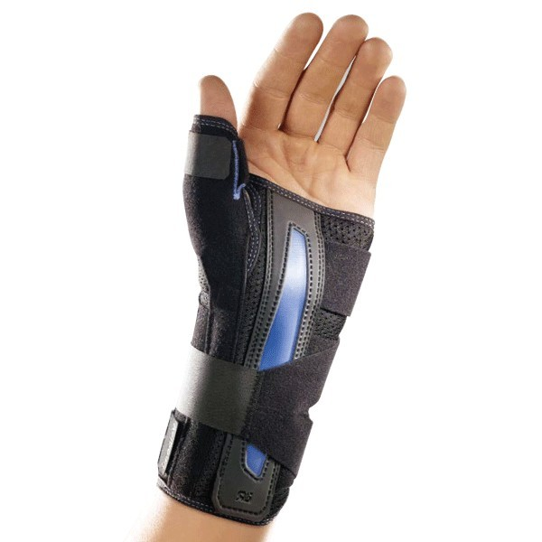
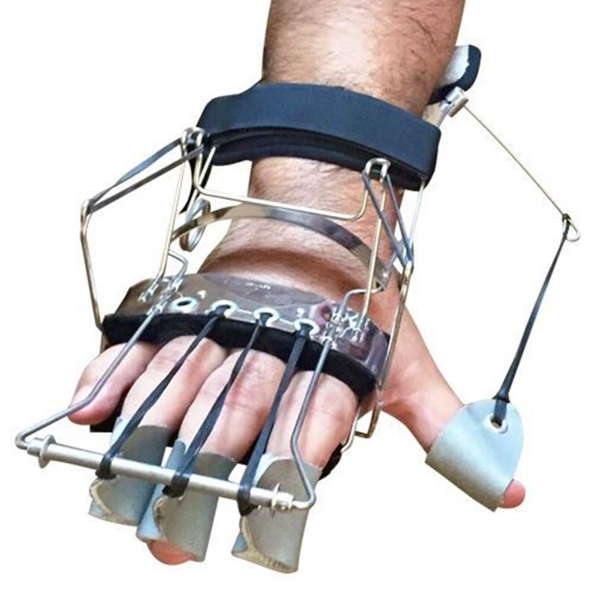
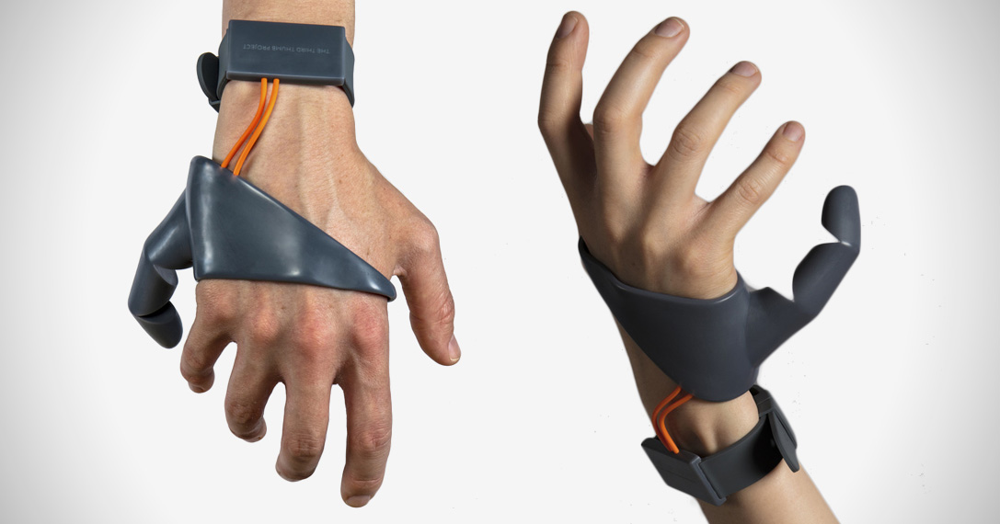
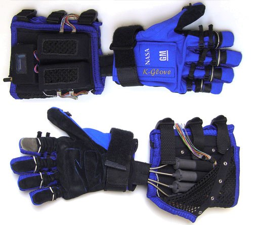
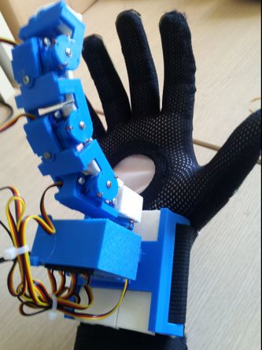

ESTADO DEL ARTE Y REQUERIMINETOS DE DISEÑO
FERULA RIGIDA
Las férulas rígidas restringen el movimiento del paciente por lo que el grado de satisfacción es bajo mientras que las que están hechas con material blando permiten el movimiento radial y cubital, razón por la cual puede darse un incremento de los síntomas en el proceso de recuperación (Neumann DA, Rowan EE. Mosby, 2002).
VENTAJAS:
- Limitacion de la actividad articular.
- Hecha con impresión 3D.
DESVENTAJAS:
- Produce transpiración.
- Dificil de limpiar, lo cual incrementa la producción de bacterias.
- Bajo grado de satisfacción del usuario.
- Limitada ventilación
Fuente: Google imagenes
FERULA DINÁMICA
Esta innovadora férula dinámica permite realizar un movimiento de pinza. Se creó en base a un material de termoplástico de alta temperatura de fácil adquisición (PVC) lo interesante de esta férula dinámica es el método de fabricación En primer lugar se toman medidas antropométricas del paciente, luego se trazan las piezas en el material, se somete a calor y es cortado y ensamblado finalmente. (Enrique Mayor, n.d.).
VENTAJAS:
- Mayor satisfacción por parte del usuario debido al acceso a ciertos grados de libertad.
- Facilitan el agarre tipo pinza.
- Facilidad en la limpieza.
- Construida a base de impresión 3D
DESVENTAJAS:
- El acceso a otros grados de libertad, pueden retrasar el tiempo de recuperación.
Fuente: Google imagenes
THE THIRD THUMB
Proyecto creado por Danielle Clode para dar una perspectiva diferente de las prótesis. Más allá de verlas como un reemplazante o un arreglo, verlas como una extensión del cuerpo para mejorar habilidades. Lo curioso de este aparato es que funciona con sensores para mover el dedo con la planta de los pies.
VENTAJAS:
- Impresión en 3D.
- Satisfacción del usuario.
- Bajo costo.
- Posición de pinza.
- Movimiento con sensores.
DESVENTAJAS:
- Requiere energía.
- Requiere adiestramiento del usuario
- No soporta mucho esfuerzo y peso.
- Múltiples piezas
Fuente: Google imagenes
ROBOGLOVE
Este guante, llamado RoboGlove, usa tendones artificiales que se han desarrollado para un futuro exoesqueleto no rígido, que se puede vestir y que ayuda en tareas pesadas. General Motors, la NASA y Bioservo Technologies AB, una compañía sueca de tecnología médica, desarrollaron hace unos años el RoboGlove, un guante robótico cuyo uso estaba originalmente pensado para los astronautas de la Estación Espacial Internacional. Con la finalidad de ayudar a facilitar las reparaciones en el espacio, tiene la capacidad de dar fuerza adicional a cualquier individuo que lo lleve puesto. RoboGlove está diseñado para optimizar la fuerza del usuario y darle una potencia adicional. El dispositivo está equipado con diversos sensores, actuadores y tendones que imitan los músculos, nervios y tendones presentes en la mano humana. Su funcionamiento es el siguiente: cada uno de los dedos dispone de sensores de presión, y cuando estos detectan que el usuario está agarrando algo los tendones sintéticos se retraen, añadiendo una importante fuerza adicional para que la tarea sea más liviana para el individuo. De acuerdo con los datos de la NASA, si para llevar a cabo una tarea con una herramienta se requiere una presión de entre 7 y 9 kb, el guante robótico puede reducirla para que solo tengan que aplicar una fuerza de entre 2,3 y 4,5 kg. (Arteaga et. al, 2016).
VENTAJAS:
- Diseño adaptable.
- Facilidad de uso.
- El usuario evitará el uso continuo de la fuerza aplicada por la mano.
- Evita el sobreesfuerzo de músculos y tendones de la mano.
DESVENTAJAS:
- Elevado costo (alrededor de 120 dólares). (Amazon)
- El usuario tendrá que aplicar cierta fuerza para realizar sus actividades.
Fuente: Google imagenes
PROTESIS COMO EXTENSION DEL CUERPO
Mejora las habilidades de la mano como la cantidad de objetos a agarrar y la manipulación como abrir botellas, puertas, etc.
VENTAJAS
- Impresión en 3D.
- Bajo costo.
- Posición de pinza.
- Ingeniería simple.
- Amplía la capacidad de la mano.
- Personalizable
DESVENTAJAS
- Impresión en 3D.
- Bajo costo.
- Posición de pinza.
- Ingeniería simple.
- Amplía la capacidad de la mano.
- Personalizable.
Fuente: Google imagenes
BIBLIOGRAFIA:
- Enrique Mayor, J. B. (n.d.). DESIGN AND DEVELOPMENT OF A TENODESIS-TYPE SPLINT MADE IN HIGH RESISTANCE THERMOPLASTIC POLYVINYL CHLORIDE (PVC) TO PROMOTE TRIPOD CLAMP GRIP IN PEOPLE WITH SPINAL CORD TRAUMA AFTERMATH.
- Green, R. (1984), “Formable orthopedic casts and splints”, USPTO, USA, 25 September.Lusardi, M.M., Jorge, M. and Nielsen, C.C. (2013)
- Orthotics and Prosthetics in Rehabilitation, Third., Elsevier Health Sciences.Paterson, A.M., Bibb, R.J. and Campbell, R.I. (2012b)
- “Evaluation of a digitised splinting approach with multiple-material functionality using Additive Manufacturing technologies”, Proceedings of the Solid Freeform Fabrication Symposium, pp. 656–672.
- Chandra, A., Watson, J., Rowson, J.E., Holland, J., Harris, R.A. and Williams, D.J. (2005)
- “Application of rapid manufacturing techniques in support of maxillofacial treatment: evidence of the requirements of clinical applications”, Proceedings of the Institution of Mechanical Engineers, Part B: Journal of Engineering Manufacture, Sage Publications, Vol. 219 No. 6, pp. 469–475.
- Hussain, I., Salvietti, G., Malvezzi, M., & Prattichizzo, D. (2015).Design guidelines for a wearable robotic extra-finger. 2015 IEEE 1st International Forum on Research and Technologies for Society and Industry, RTSI 2015 - Proceedings, 54–60.
- Nemati, Z., Javanshir, M. A., Saeedi, H., Farmani, F., & Aghajani Fesharaki, S. (2017).
- Neumann DA, Rowan EE. Kinesiology of the musculo- skeletal system: foundations for physical rehabilitation. 2nd ed. St. Louis (MO) : Mosby; 2002.
- Satoshi Adachi, Atsushi Yamamoto, Tsutomu Kobayashi, Tsuyoshi Tajika, Tetsuya Kaneko, Kazuyuki Shibusawa and Kenji Takagishi. (2011) . Prevalence of de Quervain’s Disease in the General Population and Risk Factors. Kitakanto Med J, 61, 479-482.
- The effect of new dynamic splint in pinch strength in De Quervain syndrome: a comparative study. Disability and Rehabilitation: Assistive Technology, 12(5), 457–461.
- Zhang, W., Doherty, M., Leeb, B.F., Alekseeva, L., Arden, N.K., Bijlsma, J.W., Dinçer, F., et al. (2007), “EULAR evidence based recommendations for the management of hand osteoarthritis: report of a Task Force of the EULAR Standing Committee for International Clinical Studies Including Therapeutics (ESCISIT)”, Annals of the Rheumatic Diseases, BMJ Publishing Group Ltd andEuropean League Against Rheumatism, Vol. 66 No. 3, pp. 377–388.)
- ARTEAGA,Sandra (2016). RoboGlove, el guante de la NASA que multiplica la fuerza de agarre. https://www.google.com.pe/amp/s/computerhoy.com/noticias/hardware/roboglove-guante-nasa-que-multiplica-fuerza-agarre-47714%3famp
- Paterson, A. M. J., Bibb, R. J., Campbell, R. I., & Bingham, G. (2015). Comparing Additive Manufacturing Technologies for Customised Splints. Rapid Prototyping Journal, 21(3), 230–243. https://doi.org/10.1108/RPJ-10-2013-0099
- Paterson, a. M., Bibb, R. J., & Campbell, R. I. (2012). Evaluation of a digitised splinting approach with multiple-material functionality using Additive Manufacturing technologies. Proceedings of the Solid Freeform Fabrication Symposium, 656–672. https://doi.org/10.1007/s00170-007-1181-y
- Paterson, A. M., Donnison, E., Bibb, R. J., & Ian Campbell, R. (2014). Computer-aided design to support fabrication of wrist splints using 3D printing: A feasibility study. Hand Therapy, 19(4), 102–113. https://doi.org/10.1177/1758998314544802
- Kelly, S., Paterson, A., & Bibb, R. J. (2015). A review of wrist splint designs for additive manufacture. Proceedings of 2015 14th Rapid Design, Prototyping and Manufacture Conference (RDPM 14). Retrieved from https://dspace.lboro.ac.uk/2134/21144